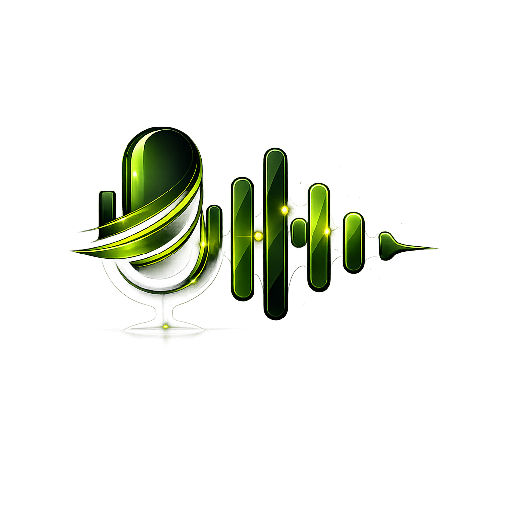

Caenan Local Edge
Setting up your environment — this only runs once
◦
Checking system
◦
Homebrew
(macOS)
◦
Docker
◦
Starting Docker daemon
◦
Supabase CLI
◦
Starting local database
◦
Ollama
◦
Pulling AI model (eburonmax/eburon-reasoner)
0 / 8
✓ Setup complete — launching Caenan…